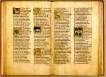

Jacob van Maerlant, Der naturen bloeme, voorafgegaan door een kalender; Broeder Geraert, Natuurkunde van het geheelal, en andere teksten. Nederlands. Handschrift op perkament, 141 ff., 310 x 230 mm. Utrecht of omgeving, circa 1360. -- (BPL 14 A)
Voor degenen die het Latijn niet voldoende machtig waren, schreef Jacob van Maerlant in de dertiende eeuw een overzicht van de wonderen van de schepping onder de titel Der naturen bloeme. Het werk behandelt vooral het dierenrijk; de schepping is daartoe onderverdeeld in veertien categorieën, die elk in een eigen boek behandeld worden. Na een algemene inleiding zijn in elk boek de dieren alfabetisch geordend, waardoor het boek gemakkelijker als naslagwerk kon dienen. In dat opzicht volgde Maerlant zijn Latijnse voorbeeld, De natura rerum van de hand van de Brabantse geestelijke Thomas van Cantimpré (1201-circa 1271). Zijn bewerking is echter, in tegenstelling tot het werk van zijn voorganger, die vooral voor geestelijken schreef, bestemd voor leken. Daarmee zal samenhangen dat de handschriften veelal geïllustreerd zijn. Zo ook dit Leidse exemplaar, dat naar alle waarschijnlijkheid omstreeks 1360 gemaakt werd voor Jan van IJsselstein, kanunnik van Sint Marie in Utrecht.
De plaats waar het handschrift openligt (folia 38v-39r), maakt het mogelijk de olifant (‘elephas’) met die uit het in nummer 81 beschreven handschrift te vergelijken. Uiteraard was dit dier ook de illustrator niet uit eigen aanschouwing bekend. Maar voorbeelden waren er ook al in de veertiende eeuw te over, niet alleen in de literatuur, maar ook in de kunst. Op dezelfde pagina’s komen echter enkele dieren voor die alleen maar een papieren bestaan leiden en zelfs dan uitgesproken zeldzaam zijn. Zo zijn de illustraties van de legendarische ‘corocrotes’ met de grote tand of ‘corocottas’, zoals Plinius hem noemt, geheel gebaseerd op de beschrijving van Maerlant. Hetzelfde geldt voor de ‘catapleba’ met de vrouwenkop of de ‘dura’, die volgens de Middelnederlandse tekst jagende honden met zijn drek weet te verdrijven. Het zijn details die de illustrator van dit handschrift (of van zijn voorbeeld) niet ontgingen.
Heel instructief voor de middeleeuwse benadering zijn de afbeeldingen van bekende dieren, hier de ‘dammula’ (damhert; ‘in dietsche een damwilt’, schrijft Maerlant) naast de verwante ‘damma’, eveneens een hert. Terwijl de laatste nog enigszins daarop lijkt, wist de illustrator met de eerste geen raad; hij doorzag de verwantschap tussen beide diersoorten niet en liet het gewei bij de ‘dammula’ achterwege. Sterker nog is het voorbeeld van de ‘daxus’, in de tekst duidelijk geïdentificeerd als de (inheemse) das. Het dier was in de middeleeuwen volgens de beschrijving gewaardeerd voor het bereiden van geneesmiddelen. Jacob van Maerlant prees het dassevet aan voor de behandeling van snijwonden, een opvatting die nog aan het begin van deze eeuw bij Limburgse mijnwerkers opgeld deed. Het dier kwam ook voor in Utrecht en zal de illustrator dan ook goed bekend zijn geweest. Toch is de afbeelding allerminst realistisch, want het meest karakteristieke kenmerk van de das, de verdeling in wit en zwart op de kop, ontbreekt. Maar dat is dan ook een bijzonderheid die in de tekst acherwege is gelaten. Zo ging ook voor de illustrator van het Maerlant-handschrift (of van diens model) het woord boven de natuur.
Literatuur
- A.W. Byvanck, Les principaux manuscrits à peintures conservés dans les collections publiques du Royaume des Pays-Bas, Paris 1931 ( = Bulletin de la Société francaise de reproduction des manuscrits à peintures. 15), p. 95.
- M.J.M. de Haan, ‘Illustrations of gems in the Leiden manuscript of Der naturen bloeme’, in: Neerlandica manuscripta. Essays presented to G.I. Lieftinck. Amsterdam 1976, vol. 3, p. 71-79.
- J. Heniger, ‘Jan van IJsselstein en Der naturen bloeme’, in: Historische Kring IJsselstein, 33/34 (1985), p. 261-280.
- P.F.J. Obbema, ‘Het Leidse handschrift van Der naturen bloeme’, in: Historische Kring IJsselstein, 33/34 (1985), p. 281-288.
- Tr.M. Nischik, Das volkssprachliche Naturbuch im späten Mittelalter. Sachkunde und Dinginterpretation bei Jacob van Maerlant und Konrad von Megenberg. Tübingen 1986 ( = Hermae. N.F. 48).
| vorige pagina | top pagina |